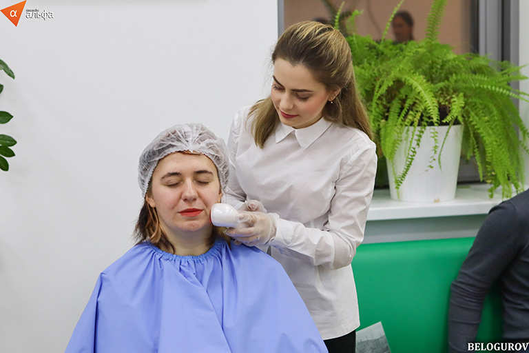
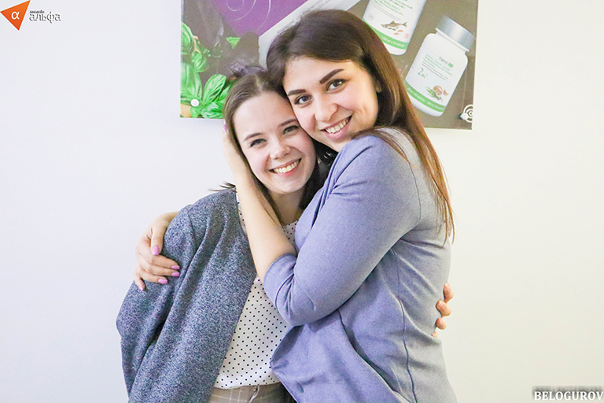
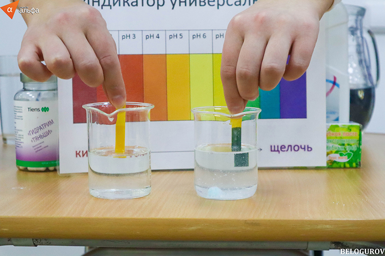

What is Health DAY?




en
/
ru
China is considered the birthplace of reflexology. It is based on the idea that the body is a single, interconnected system, and a malfunction of one part immediately responds to another. The channels located on the arms are connected to the internal organs of your body. Changes in internal organs are reflected in the hands. By stimulating the acupuncture points on the palm of your hand, you can understand about the presence or absence of a disease or any changes in the organs.
The Tiens-life acupuncture device helps and facilitates our task of determining the state of organs with great accuracy.
The principle of operation of Tiens-life: Due to the effect of electromagnetic therapy on acupuncture points on the palm of the hand, the device detects the state of health of organs in the human body. Depending on the level of pain, it is possible to determine whether there are physiological abnormalities in the organs.
Advantages:
Benefits: